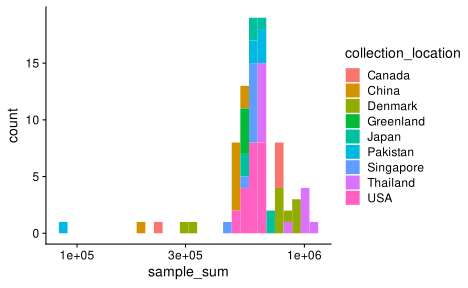
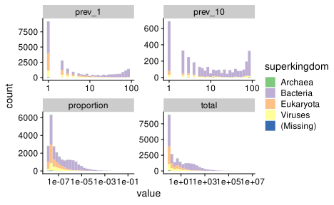
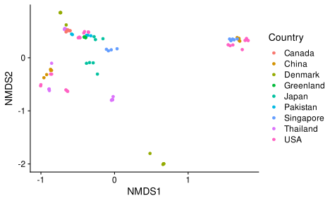
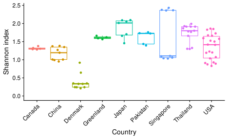
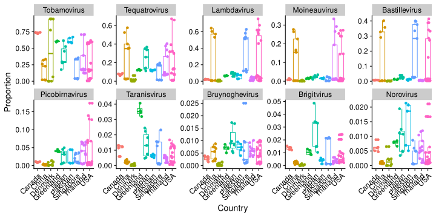

R setup
Start by loading some useful R packages,
# set of data analysis and viz tools
library(tidyverse)
# file system helpers
library(fs)
# specifying locations within a project
library(here)
# microbiome analysis helpers
library(biomformat)
library(speedyseq)
# plotting helpers
library(cowplot)
library(patchwork)
library(ggbeeswarm)
theme_set(theme_cowplot())Here I’ll work with the BIOM file generated from the Hjelmsø et al. (2019) taxonomic profiles.
[1] "2022-11-07_combined_microbiome_file_nt_r.biom"
[2] "2022-11-07_combined_microbiome_file_nt_r_fixed.biom"Data import
From a BIOM file (Hjelmsø et al. (2019) data)
The BIOM format (https://biom-format.org/, McDonald et al. (2012)) is a file format for including the abundance matrix, taxonomy, and sample metadata all in one file. BIOM export from CZID is supported but listed as being in Beta.
If we try reading in the file as directly exported from CZID, we get an error
Error in validObject(.Object): invalid class "biom" object: type field has unsupported valueThis error arises because the ‘type’ of the data object defined in the JSON-formatted contents of the .biom file isn’t valid as per the biom format v1.0 specs, see https://biom-format.org/documentation/format_versions/biom-1.0.html.
We can see this by opening up the file and looking for the type argument towards the beginning; or looking at the top items in the list after reading in the file with a JSON parser.
biom_json <- path(hjelmso_data_path,
'2022-11-07_combined_microbiome_file_nt_r.biom') %>%
jsonlite::read_json()
biom_json %>% head(9)$id
[1] "None"
$format
[1] "Biological Observation Matrix 1.0.0"
$format_url
[1] "http://biom-format.org"
$matrix_type
[1] "sparse"
$generated_by
[1] "BIOM-Format 2.1.12"
$date
[1] "2022-11-07T20:37:42.385642"
$type
[1] "Table"
$matrix_element_type
[1] "float"
$shape
$shape[[1]]
[1] 25495
$shape[[2]]
[1] 85We can fix the file by changing the type from ‘Table’ to something valid. It doesn’t actually matter what we use:
While type is a required entry in BIOM tables, the BIOM format itself does not change for different data types (e.g., OTU Table, function table, metabolite table). This information is included to allow tools that use BIOM files to determine the data type, if desired. (Caption for Additional file 5 in McDonald et al. (2012))
Let’s use ‘Taxon table’. The following code chunk should do the trick but is very slow, apparently because the jsonlite package is slow to work with large lists/files.
biom_json$type <- 'Taxon table'
jsonlite::write_json(
biom_json,
path(hjelmso_data_path, '2022-11-07_combined_microbiome_file_nt_r_fixed.biom')
)So I’ll instead simply replace the offending text.
biom_text <- path(hjelmso_data_path, '2022-11-07_combined_microbiome_file_nt_r.biom') %>%
read_file
stopifnot( identical(biom_text %>% str_count('"Table"'), 1L) )
biom_text_fixed <- biom_text %>%
str_replace('"Table"', '"Taxon table"')
write_file(
biom_text_fixed,
path(hjelmso_data_path, '2022-11-07_combined_microbiome_file_nt_r_fixed.biom')
)The above chunk reads in the BIOM file’s contents as a single string, checks that ‘“Table”’ appears only once (in the field where it is set as the type), then replaces it with ‘“Taxon table”’), then writes the string as a new BIOM file. We should now be able to load the corrected BIOM file with the biomformat package,
biom <- path(hjelmso_data_path, '2022-11-07_combined_microbiome_file_nt_r_fixed.biom') %>%
read_biom() %>%
printbiom object.
type: Taxon table
matrix_type: sparse
25495 rows and 85 columns Note: For most objects in R, the print() and glimpse() methods silently return the object as well as printing information about it.
Adding a print or glimpse call at the end of a variable-assignment pipe chain is a succinct way to save an object and show some info about it.
Create a phyloseq object
The abundance (count) matrix, sample metadata table, and taxonomy table can be extracted with three corresponding functions functions from the biomformat package.
We’ll tackle these one at a time.
First, the abundance matrix.
The abundance matrix is stored as a sparse matrix from the Matrix package. That is fine for now, though phyloseq will want a standard (dense) matrix.
Next, the sample metadata.
sam <- biom %>% sample_metadata()
sam %>% class[1] "data.frame"sam %>% head sample_type nucleotide_type collection_date
ERR3026532:288969 Airplane sewage RNA 2013-01
ERR3026500:288937 Airplane sewage RNA 2013-01
ERR3026576:289013 Airplane sewage RNA 2013-01
ERR3026559:288996 Airplane sewage RNA 2013-01
ERR3026571:289008 Airplane sewage RNA 2013-01
ERR3026512:288949 Airplane sewage RNA 2013-01
water_control collection_location isolate
ERR3026532:288969 No Pakistan No
ERR3026500:288937 No China No
ERR3026576:289013 No Denmark No
ERR3026559:288996 No Canada No
ERR3026571:289008 No Denmark No
ERR3026512:288949 No Japan No
Study Sample Name
ERR3026532:288969 Islamabad_2_c
ERR3026500:288937 Beijing_2_e
ERR3026576:289013 Library_blank_a
ERR3026559:288996 Toronto_e
ERR3026571:289008 Negative_control_a
ERR3026512:288949 Tokyo_1_dsam %>% glimpseRows: 85
Columns: 7
$ sample_type <chr> "Airplane sewage", "Airplane sewage", "A…
$ nucleotide_type <chr> "RNA", "RNA", "RNA", "RNA", "RNA", "RNA"…
$ collection_date <chr> "2013-01", "2013-01", "2013-01", "2013-0…
$ water_control <chr> "No", "No", "No", "No", "No", "No", "No"…
$ collection_location <chr> "Pakistan", "China", "Denmark", "Canada"…
$ isolate <chr> "No", "No", "No", "No", "No", "No", "No"…
$ `Study Sample Name` <chr> "Islamabad_2_c", "Beijing_2_e", "Library…The sample metadata is a standard data frame with rownames giving sample ids, and the taxonomy information is stored as a list.
Notice how all the variable names are in snake case except for one.
This is apparently because the CZID BIOM exports its own standard variables as snake case (though shows them otherwise in the online interface), but leaves custom variables unchanged.
It is convinient to standardize all variable names to snake case; an easy way to do this is with the function janitor::clean_names().
sam <- sam %>%
janitor::clean_names() %>%
glimpseRows: 85
Columns: 7
$ sample_type <chr> "Airplane sewage", "Airplane sewage", "A…
$ nucleotide_type <chr> "RNA", "RNA", "RNA", "RNA", "RNA", "RNA"…
$ collection_date <chr> "2013-01", "2013-01", "2013-01", "2013-0…
$ water_control <chr> "No", "No", "No", "No", "No", "No", "No"…
$ collection_location <chr> "Pakistan", "China", "Denmark", "Canada"…
$ isolate <chr> "No", "No", "No", "No", "No", "No", "No"…
$ study_sample_name <chr> "Islamabad_2_c", "Beijing_2_e", "Library…Next, the taxonomy table, or what the biomformat package calls the ‘observation metadata’.
tax <- biom %>% observation_metadata()
tax %>% class[1] "list"$`Bacteria;;Proteobacteria;Alphaproteobacteria;Rhizobiales;Xanthobacteraceae;Azorhizobium;Azorhizobium caulinodans`
taxonomy1 taxonomy2
"Bacteria" ""
taxonomy3 taxonomy4
"Proteobacteria" "Alphaproteobacteria"
taxonomy5 taxonomy6
"Rhizobiales" "Xanthobacteraceae"
taxonomy7 taxonomy8
"Azorhizobium" "Azorhizobium caulinodans"
$`Bacteria;;Proteobacteria;Gammaproteobacteria;Enterobacterales;Erwiniaceae;Buchnera;Buchnera aphidicola`
taxonomy1 taxonomy2 taxonomy3
"Bacteria" "" "Proteobacteria"
taxonomy4 taxonomy5 taxonomy6
"Gammaproteobacteria" "Enterobacterales" "Erwiniaceae"
taxonomy7 taxonomy8
"Buchnera" "Buchnera aphidicola" We can see that here we have a list, with one element per taxon.
The documentation for biomformat::observation_metadata indicates that this function may return a ‘data.frame’ rather than a list, if it is able to, but does not say under what conditions that will be the case.
Ultimately we want a data frame (or tibble).
The following code chunk checks which we have, and if we have a list, tries to turn it into a data frame by spreading out the taxonomy vector of each list element into a table.
tax_tmp <- biom %>% observation_metadata()
if (is.data.frame(tax_tmp)) {
tax <- tax_tmp %>% as_tibble(rownames = '.otu')
} else {
tax <- tax_tmp %>%
enframe(name = 'feature_id') %>%
unnest_wider(value)
}
rm(tax_tmp)
tax %>% glimpseRows: 25,495
Columns: 9
$ feature_id <chr> "Bacteria;;Proteobacteria;Alphaproteobacteria;Rhi…
$ taxonomy1 <chr> "Bacteria", "Bacteria", "Bacteria", "Bacteria", "…
$ taxonomy2 <chr> "", "", "", "", "", "", "", "", "", "", "", "", "…
$ taxonomy3 <chr> "Proteobacteria", "Proteobacteria", "Actinobacter…
$ taxonomy4 <chr> "Alphaproteobacteria", "Gammaproteobacteria", "Ac…
$ taxonomy5 <chr> "Rhizobiales", "Enterobacterales", "Micrococcales…
$ taxonomy6 <chr> "Xanthobacteraceae", "Erwiniaceae", "Cellulomonad…
$ taxonomy7 <chr> "Azorhizobium", "Buchnera", "Cellulomonas", "Dict…
$ taxonomy8 <chr> "Azorhizobium caulinodans", "Buchnera aphidicola"…To facilitate downstream analysis, it is helpful to so some cleanup:
- Replace the taxonomic ranks with the standard NCBI rank names (see an example NCBI taxonomic record)
- In cases where the rank is missing/unassigned, replace the empty string with NA
rnks <- c('superkingdom', 'kingdom', 'phylum', 'class', 'order', 'family',
'genus', 'species')
colnames(tax)[2:9] <- rnks
# use NA for missing ranks
tax <- tax %>%
mutate(
across(everything(), ~ifelse(. == "", NA_character_, .))
)
tax %>% glimpseRows: 25,495
Columns: 9
$ feature_id <chr> "Bacteria;;Proteobacteria;Alphaproteobacteria;R…
$ superkingdom <chr> "Bacteria", "Bacteria", "Bacteria", "Bacteria",…
$ kingdom <chr> NA, NA, NA, NA, NA, NA, NA, NA, NA, NA, NA, NA,…
$ phylum <chr> "Proteobacteria", "Proteobacteria", "Actinobact…
$ class <chr> "Alphaproteobacteria", "Gammaproteobacteria", "…
$ order <chr> "Rhizobiales", "Enterobacterales", "Micrococcal…
$ family <chr> "Xanthobacteraceae", "Erwiniaceae", "Cellulomon…
$ genus <chr> "Azorhizobium", "Buchnera", "Cellulomonas", "Di…
$ species <chr> "Azorhizobium caulinodans", "Buchnera aphidicol…Now let’s import all three tables into a single phyloseq object. This involves converting each individual table into the corresponding class from the phyloseq package, and then combiningg these into one phyloseq-class object.
ps <- phyloseq(
otu_table(abun %>% as.matrix, taxa_are_rows = TRUE),
sample_data(sam),
tax_table(tax)
)Note that we had to first coerce the abundance matrix to a standard dense matrix; we also needed to tell phyloseq that taxa corresponded to rows in the matrix.
Basic data checks and stats
TODO: explain below
ps <- ps %>%
mutate_sample_data(.,
sample_sum = sample_sums(.)
)
sam <- ps %>% sample_data %>% as_tibble
tax <- ps %>% tax_table %>% as_tibbleps %>% tphyloseq-class experiment-level object
otu_table() OTU Table: [ 25495 taxa and 85 samples ]:
sample_data() Sample Data: [ 85 samples by 8 sample variables ]:
tax_table() Taxonomy Table: [ 25495 taxa by 8 taxonomic ranks ]:
taxa are columns[1] "ERR3026532:288969" "ERR3026500:288937" "ERR3026576:289013"
[4] "ERR3026559:288996" "ERR3026571:289008" "ERR3026512:288949"Rows: 85
Columns: 8
$ sample_type <chr> "Airplane sewage", "Airplane sewage", "A…
$ nucleotide_type <chr> "RNA", "RNA", "RNA", "RNA", "RNA", "RNA"…
$ collection_date <chr> "2013-01", "2013-01", "2013-01", "2013-0…
$ water_control <chr> "No", "No", "No", "No", "No", "No", "No"…
$ collection_location <chr> "Pakistan", "China", "Denmark", "Canada"…
$ isolate <chr> "No", "No", "No", "No", "No", "No", "No"…
$ study_sample_name <chr> "Islamabad_2_c", "Beijing_2_e", "Library…
$ sample_sum <dbl> 83328, 188401, 313204, 234338, 767843, 5…sam %>%
ggplot(aes(sample_sum, fill = collection_location)) +
scale_x_log10() +
geom_histogram()
taxon_stats %>%
pivot_longer(-c(.otu, superkingdom)) %>%
ggplot(aes(value, fill = superkingdom)) +
facet_wrap(~name, scales = 'free') +
scale_x_log10() +
scale_fill_brewer(type = 'qual') +
geom_histogram() 
Taxonomy
NCBI taxonomy has recently received changes in some prokaryotic phylum names. Let’s check to see which version of phylum names are being used here, by seeing whether a Bacteroides species’ phylum is listed as ‘Bacteroidetes’ (old name) or ‘Bacteroidota’ (new name).
Rows: 1
Columns: 9
$ .otu <chr> "Bacteria;;Bacteroidetes;Bacteroidia;Bacteroida…
$ superkingdom <chr> "Bacteria"
$ kingdom <chr> NA
$ phylum <chr> "Bacteroidetes"
$ class <chr> "Bacteroidia"
$ order <chr> "Bacteroidales"
$ family <chr> "Bacteroidaceae"
$ genus <chr> "Bacteroides"
$ species <chr> "Bacteroides fragilis"If we look at this taxon in NCBI taxonomy, we can see that NCBI has adopted the new phylum name ‘Bacteroidota’; however, here we see the old phylum name. This suggests that CZID is currently using an older version of NCBI prior to the name change.
see - https://ncbiinsights.ncbi.nlm.nih.gov/2021/12/10/ncbi-taxonomy-prokaryote-phyla-added/ - https://www.the-scientist.com/news-opinion/newly-renamed-prokaryote-phyla-cause-uproar-69578
Check classification percentages
tax %>%
pivot_longer(-.otu, names_to = 'rank') %>%
with_groups(rank, summarize,
features_classified = sum(!is.na(value)),
features_total = n()
) %>%
mutate(
frac_classified = features_classified / features_total,
rank = factor(rank, rank_names(ps))
) %>%
arrange(rank)# A tibble: 8 × 4
rank features_classified features_total frac_classified
<fct> <int> <int> <dbl>
1 superkingdom 25381 25495 0.996
2 kingdom 4995 25495 0.196
3 phylum 22667 25495 0.889
4 class 22119 25495 0.868
5 order 22199 25495 0.871
6 family 21744 25495 0.853
7 genus 20649 25495 0.810
8 species 25493 25495 1.00 This analysis points to some notable features of the data. For example, not every taxonomic feature has a superkingdom. Let’s take a look at some of those ‘species’ that don’t,
set.seed(42)
tax %>%
filter(is.na(superkingdom)) %>%
select(superkingdom, kingdom, genus, species) %>%
slice_sample(n=20)# A tibble: 20 × 4
superkingdom kingdom genus species
<chr> <chr> <chr> <chr>
1 <NA> <NA> <NA> Cloning vector pPKm-230
2 <NA> <NA> <NA> Cloning vector pMT450
3 <NA> <NA> <NA> Vector pAAV-hSyn1-FLEX-GAP43-GCaMP6s-P2…
4 <NA> <NA> <NA> uncultured microorganism
5 <NA> <NA> <NA> Cloning vector shRNA EYFP-P2A Puro
6 <NA> <NA> <NA> Cloning vector pMT449
7 <NA> <NA> <NA> IncQ plasmid pIE1120
8 <NA> <NA> <NA> Cloning vector pHal7-FAPG462VRFP
9 <NA> <NA> <NA> Shuttle vector pG106
10 <NA> <NA> <NA> uncultured gut microbe of Zootermopsis …
11 <NA> <NA> <NA> Vector EP-Pol
12 <NA> <NA> <NA> Cloning vector pRGPDuo4
13 <NA> <NA> <NA> Cloning vector IA5_YQR_DIMER
14 <NA> <NA> <NA> Plasmid pMCBF1
15 <NA> <NA> <NA> Plasmid pM3
16 <NA> <NA> <NA> uncultured marine organism
17 <NA> <NA> <NA> Transposon Tn4551
18 <NA> <NA> <NA> Sphinx1.76-related DNA
19 <NA> <NA> <NA> Cloning vector pMT451
20 <NA> <NA> <NA> uncultured marine microorganism Can see that CZID report reference sequences that are in NT but don’t corresopnd to known organisms.
What about ‘species’ without intermediate ranks?
tax %>%
filter(!is.na(superkingdom), is.na(family)) %>%
select(superkingdom, kingdom, phylum, family, genus, species) %>%
slice_sample(n=20)# A tibble: 20 × 6
superkingdom kingdom phylum family genus species
<chr> <chr> <chr> <chr> <chr> <chr>
1 Bacteria <NA> <NA> <NA> <NA> uncult…
2 Bacteria <NA> <NA> <NA> <NA> swine …
3 Bacteria <NA> <NA> <NA> <NA> uncult…
4 Bacteria <NA> <NA> <NA> <NA> butyra…
5 Bacteria <NA> <NA> <NA> <NA> bacter…
6 Bacteria <NA> Chloroflexi <NA> Dehalogenimonas Dehalo…
7 Bacteria <NA> Proteobacteria <NA> <NA> alpha …
8 Eukaryota <NA> Bacillariophyta <NA> <NA> uncult…
9 Bacteria <NA> <NA> <NA> <NA> bacter…
10 Bacteria <NA> Actinobacteria <NA> <NA> actino…
11 Bacteria <NA> <NA> <NA> <NA> bacter…
12 Bacteria <NA> <NA> <NA> <NA> uncult…
13 Bacteria <NA> <NA> <NA> <NA> uncult…
14 Bacteria <NA> Proteobacteria <NA> <NA> arseni…
15 Bacteria <NA> <NA> <NA> <NA> uncult…
16 Bacteria <NA> <NA> <NA> <NA> uncult…
17 Bacteria <NA> <NA> <NA> <NA> bacter…
18 Bacteria <NA> <NA> <NA> <NA> uncult…
19 Archaea <NA> <NA> <NA> <NA> uncult…
20 Bacteria <NA> <NA> <NA> <NA> uncult…Can also see cases where a species does not have an intermediate rank defined, such as family. Having NA for intermediate ranks could cause issues, and we might consider replacing these with a new string such as ‘Enterobacterales_unclassified’.
How do features break down by superkingdom?
# A tibble: 5 × 3
superkingdom n fraction
<chr> <int> <dbl>
1 Archaea 391 0.0153
2 Bacteria 16583 0.650
3 Eukaryota 5655 0.222
4 Viruses 2752 0.108
5 <NA> 114 0.00447Analysis
Recreating Figure 4 from Rothman et al. (2021) using the Hjelmso data
Figure 4 from Rothman et al. (2021) combines three common types of plots in microbiome analysis: An ordination plot to visualize the similarities and differences between samples, a plot showing the distribution of an alpha diversity metric (Shannon index) across samples, and the proportions (relative abundance) of particular species across samples (faceted by species). Here I’ll show how to (mostly) recreate this plot using the Hjelmso data.
First, we’ll filter out some samples and taxa, which is a typical first step to any analysis. There is a lot more to say about how you might do said filtering; but here I’ll
- Remove samples with very low read counts, since the low read counts can be a sign of experimental issues with those samples and can skew interpretation of some analyses
- Subset to just viruses (the Rothman analysis only considers viruses)
- Remove species not appearing in at least 2 samples and 10 reads, which will speed up calculations and likely make our results more meaningful since these identifications can easily be spurious.
- Aggregate to the genus level
ps_plot <- ps %>%
filter_sample_data(sample_sum > 1e5) %>%
filter_tax_table(superkingdom == 'Viruses') %>%
filter_taxa2(~ sum(. > 0) > 2 & sum(.) >= 10) %>%
tax_glom('genus', NArm = TRUE) %>%
printphyloseq-class experiment-level object
otu_table() OTU Table: [ 110 taxa and 84 samples ]:
sample_data() Sample Data: [ 84 samples by 8 sample variables ]:
tax_table() Taxonomy Table: [ 110 taxa by 8 taxonomic ranks ]:
taxa are rowsNow there are only 110 species being considered, compared to 25495 in the entire CZID output.
Note that taxa with a missing genus name have been filtered out; this is the phyloseq default but it can have big effects so need to be aware and consider whether this is desired for a given analysis.
Note, the names of the taxonomic features after aggregation are set to the name of the most abundant feature within the genus; they are not automatically set to the genus name. That is easy to do manually, provided that you have unique genus names (which is not always the case). It can be useful to check if the genus names are unique for plotting by genus later on,
There are no duplicates, so we can uniquely refer to taxa by genus name.
Bray-Curtis NMDS ordination (Panel A)
There are many ways to do this; here I’ll use the ordinate() and plot_ordination() helper function from phyloseq to create the NMDS plot using the Bray-Curtis community dissimilarity metric.
Note, that it is important to manually normalize the abundances to have the same total in each sample (e.g. by normalizing to proportions, as done here), otherwise the different total counts across samples will affect the results.
nmds <- ps_plot %>%
transform_sample_counts(~ . / sum(.)) %>%
ordinate(method = "NMDS", distance = "bray", trymax = 50)Run 0 stress 0.1002992
Run 1 stress 0.1173969
Run 2 stress 0.1480709
Run 3 stress 0.1173968
Run 4 stress 0.1002992
... Procrustes: rmse 3.717243e-06 max resid 1.691263e-05
... Similar to previous best
Run 5 stress 0.1424676
Run 6 stress 0.130377
Run 7 stress 0.1002992
... Procrustes: rmse 2.661887e-06 max resid 1.175533e-05
... Similar to previous best
Run 8 stress 0.1002992
... Procrustes: rmse 1.104143e-05 max resid 6.17019e-05
... Similar to previous best
Run 9 stress 0.1173976
Run 10 stress 0.1173975
Run 11 stress 0.1292318
Run 12 stress 0.1294527
Run 13 stress 0.1002992
... New best solution
... Procrustes: rmse 5.355197e-06 max resid 1.53618e-05
... Similar to previous best
Run 14 stress 0.1629023
Run 15 stress 0.117396
Run 16 stress 0.1417549
Run 17 stress 0.1417084
Run 18 stress 0.1002992
... Procrustes: rmse 1.162339e-05 max resid 7.001561e-05
... Similar to previous best
Run 19 stress 0.1002992
... Procrustes: rmse 7.305224e-06 max resid 4.166893e-05
... Similar to previous best
Run 20 stress 0.1292315
*** Best solution repeated 3 timesp_ord <- plot_ordination(ps_plot, nmds,
color = "collection_location", type = "samples"
) +
labs(color = 'Country')
p_ord 
Alpha diversity (Panel B)
We can compute Shannon alpha diversity index for each sample in a variety of ways:
phyloseq::estimate_richness()vegan::diversity()- Performing the calculation ourselves from the definition
shannon_index <- otu_table(ps_plot) %>%
orient_taxa(as = 'cols') %>%
vegan::diversity()
shannon_index %>% headERR3026500:288937 ERR3026576:289013 ERR3026559:288996
1.3500820 0.6443310 1.3777211
ERR3026571:289008 ERR3026512:288949 ERR3026526:288963
0.9189514 2.0592347 1.6738584 Note that we needed to reorient the abundance matrix (i.e. OTU table) to have taxa corresponding to columns, as this is what functions in the vegan package expect. We can tell that we used the correct orientation because the resulting diversity values are in a named vector where the names correspond to the sample names. If we had passed the matrix in the incorrect orientation, then the vector names would be the taxa names.
Let’s add the Shannon index to a copy of the sample data,
sam_plot <- ps_plot %>% sample_data %>% as_tibble %>%
add_column(shannon_index = shannon_index)then create the plot,
p_div <- sam_plot %>%
ggplot(aes(y = shannon_index, x = collection_location,
color = collection_location)) +
geom_boxplot(outlier.shape = NA) +
geom_quasirandom() +
expand_limits(y = 0) +
# scale_color_manual(values = colors_countries) +
labs(x = 'Country', y = 'Shannon index') +
theme(
axis.text.x = element_text(angle = 45, vjust = 1, hjust = 1),
legend.position = 'none'
)
p_div
Note, I’m plotting the data points over the box plots, since it is useful to see the scatter when we’re working with a relatively small number of points like this. I therefore turned off the plotting of outliers in the boxplot layer.
Note, I suggest using the exponential of the Shannon index and plotting on a log scale), so that the numbers shown on the axis are in terms of effective number of species.
Relative abundances (Proportions) (Panel C)
In the actual Rothman figure, the abundances for a set of viruses are shown; the particular viruses were picked based on an analysis to determine viruses that vary across treatment plant, using the ANCOM R package. I may do that in a future version of this script, but for now I’ll just pick the 10 most abundant viruses by average proportion.
First, get a data frame for plotting, with the proportions of all taxa alongside the original read counts,
x <- ps_plot %>%
as_tibble %>%
with_groups(.sample, mutate,
proportion = .abundance / sum(.abundance))Next, get the top 10 viruses by median proportion. We can do this various ways, e.g.
or
top_viruses2 <- x %>%
with_groups(.otu, summarize, across(proportion, median)) %>%
slice_max(proportion, n = 10) %>%
print %>%
pull(.otu)# A tibble: 10 × 2
.otu propo…¹
<chr> <dbl>
1 Viruses;Orthornavirae;Kitrinoviricota;Alsuviricetes;Martel… 0.282
2 Viruses;;Uroviricota;Caudoviricetes;Caudovirales;Myovirida… 0.0821
3 Viruses;;Uroviricota;Caudoviricetes;Caudovirales;Siphoviri… 0.0456
4 Viruses;;Uroviricota;Caudoviricetes;Caudovirales;Siphoviri… 0.0127
5 Viruses;;Uroviricota;Caudoviricetes;Caudovirales;Herellevi… 0.00844
6 Viruses;Orthornavirae;Pisuviricota;Duplopiviricetes;Durnav… 0.00821
7 Viruses;;Uroviricota;Caudoviricetes;Caudovirales;Myovirida… 0.00500
8 Viruses;;Uroviricota;Caudoviricetes;Caudovirales;Podovirid… 0.00478
9 Viruses;;Uroviricota;Caudoviricetes;Caudovirales;Myovirida… 0.00353
10 Viruses;Orthornavirae;Pisuviricota;Pisoniviricetes;Picorna… 0.00323
# … with abbreviated variable name ¹proportionidentical(top_viruses1, top_viruses2)[1] TRUEp_prop <- x %>%
filter(.otu %in% top_viruses1) %>%
mutate(
across(genus, fct_reorder, proportion, .fun = median, .desc = TRUE),
) %>%
ggplot(aes(x = collection_location, y = proportion,
color = collection_location)) +
facet_wrap(~genus, nrow = 2, scales = 'free_y') +
# scale_y_log10() +
geom_boxplot() +
geom_jitter() +
labs(y = 'Proportion', x = 'Country') +
theme(
axis.text.x = element_text(angle = 45, vjust = 1, hjust = 1),
legend.position = 'none'
)
p_prop
Note, I’ve ordered the facets as decreasing in median proportion.
Put the panels together
Putting multiple panels together is often very easy with the patchwork package loaded,
(p_ord + p_div) / p_prop +
plot_annotation(tag_levels = 'A')
This plot could definitely benefit from some extra fiddling, to adjust the spacing and colors etc.